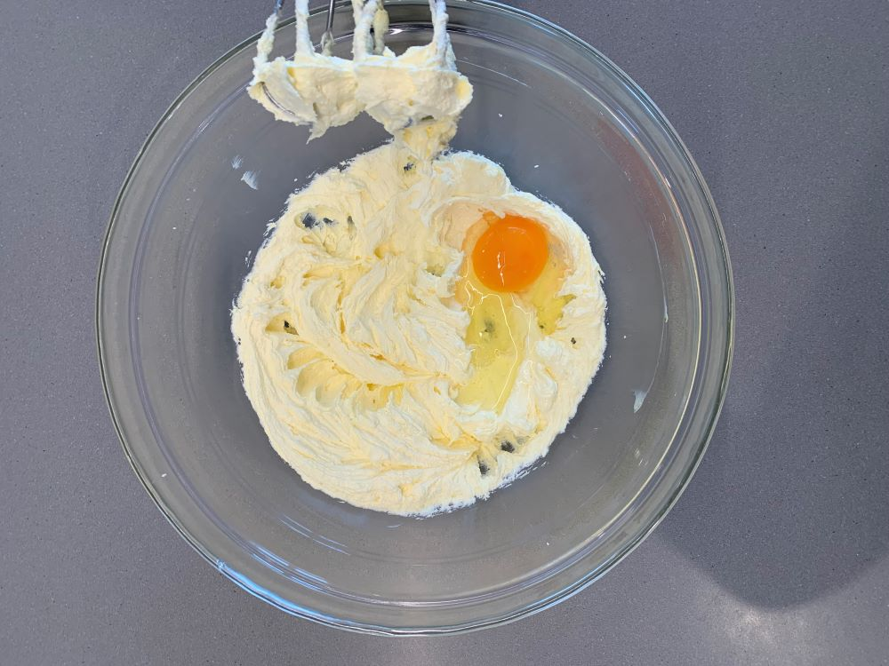
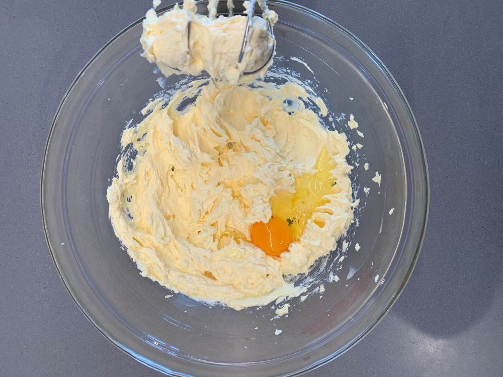
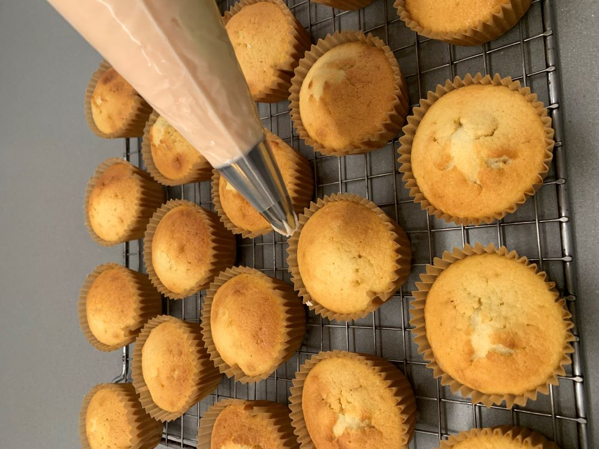

To make the cupcakes
Preparation
Preheat the oven to 180°c and put cupcake liners into muffin pans. Soften the butter and bring the eggs to room temperature.
Step 1
Cream the butter until smooth, add the sugar gradually and beat until the mixture is light and fluffy.
Step 2
Add the eggs one at a time, beating for at least a minute after each addition.


Step 3
Sift the flour and baking powder together and add to the mixture alternately with the milk and vanilla.
Step 4
Spoon into the cupcake liners and bake for about 20 minutes or until golden. Finish by cooling on a rack.
To make the frosting
Step 1
Combine half of the sifted icing sugar with the softened butter, milk, and vanilla and beat until smooth.
Step 2
Add the remaining icing sugar gradually, mixing until the icing is a good spreading consistency.
Step 3
Add the desired amount of food coloring and frost the cupcakes as you wish.
